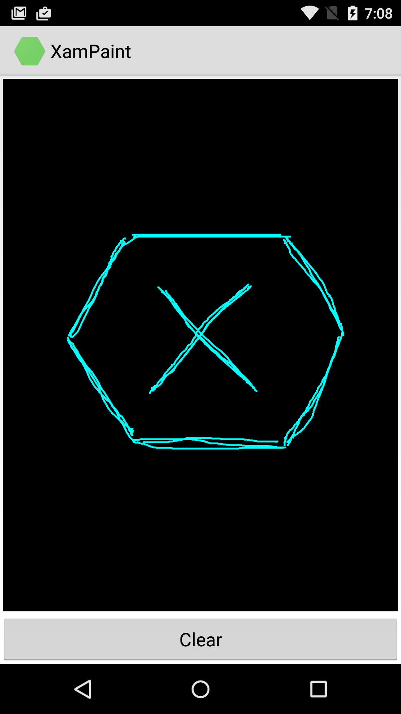

Duration
15 minutes
Goals
The primary goal of this lab will be to create a single-touch drawing app. The screenshot below shows the finished app with a simple user-created drawing.
Required assets
The Resources folder for this part contains a Start solution you will use as starter code and a Completed solution you can use to check your work.
Challenge
Use the high-level guidelines here to complete the exercise. Detailed instructions are provided below if you would like more information.
The starter project contains a single Activity, which displays a custom View.
You'll add code to track and visualize touch events provided by the custom view.
- Open the XamPaint solution in the Start folder.
- Open the PaintView.cs file. All your work will be done here.
-
Add two fields to the
PaintViewclass which you will use to draw lines on the screen - create aPathobject and aPaintobject. -
Override the
OnTouchEventmethod. -
Create a
switchstatement inOnTouchEventbased on the MotionEvent'sActionMaskedproperty. -
Update the
Pathin the switch statement as needed. -
Draw the
Pathby overridingOnDrawand callingDrawPathon thecanvasparameter. -
In the provided
Clearmethod, callReseton thePathand then call your base'sInvalidatemethod. - Run the app and draw!
Steps
You can either use the above guidelines or follow the step-by-step instructions shown here.
Open the XamPaint start solution
- Open the XamPaint solution in the Start folder.
- Inspect the code and run the application. You should see a mostly blank screen with a clear button at the bottom.
Add a Paint object and a Path object
You will add two objects to the PaintView class. A Path object that will be used to store a series of line
segments. A Paint object you will use when you draw the Path to the screen.
- Create a class level
Pathobject nameddrawPath. - Create a class level
Paintobject nameddrawPaint. -
Instantiate the two fields in the
Initmethod.
Set the following properties ondrawPaint:- Set the
Colorto "Aqua" - Set the
StrokeWidthto "5f" - Set the
StyletoPaint.Style.Strokeusing theSetStylemethod on thePaintobject
- Set the
Override OnTouchEvent
- Override the
OnTouchEventmethod in thePaintViewclass. - Create two local variables,
xandyand retrieve the current touch location from theMotionEventparameter.
Create a switch statement based on ActionMasked
You need to respond when the user touches the screen and when they move a finger on screen.
- Create a switch statement in the
OnTouchEventmethod based on theActionMaskedproperty of theMotionEvent. - Add cases for
MotionActionEvent.DownandMotionActionEvent.Move.
Update the Path in OnTouchEvent
- When the user touches the screen, move
drawPathto the current location by calling theMoveTomethod. - When the user moves their finger, create a line segment to the new location by calling the
LineTomethod.
Draw the Path
The View class has two methods you need to work with to draw the Path on the screen:
Invalidate and OnDraw. You override OnDraw and do your drawing into a canvas that
Android provides. You call Invalidate whenever your data changes and then Android calls your override
of OnDraw.
- Override the
OnDrawmethod in thePaintViewclass. Call the canvas'sDrawPathmethod passing indrawPathanddrawPaint. - In your override of
OnTouchEvent, add a call to your base'sInvalidatemethod when the user moves their finger.
Clear the screen
The Clear button's Touch event handler is already connected to the Clear method.
Add code to clear the screen.
- Call the
drawPath'sResetmethod. - Call
Invalidateto refresh the screen. - Run the app and draw a picture!
Summary
During this lab you applied what we have learned about single-touch events in Android to track and visualize touch within a custom view.